Единственное животное на планете, у которого на языке два ряда зубов, - водяные черви миксины. Эти сердцееды с вульгарной красотой вырастают до 70 сантиметров и выедают внутренности у рыб (да, и сердце в том числе).

Объем глазниц у сов почти целиком занят глазным яблоком, отчего они не могут вращать глазами и видят только то, что перед ними. А вот голову они поворачивают аж на 360 градусов!
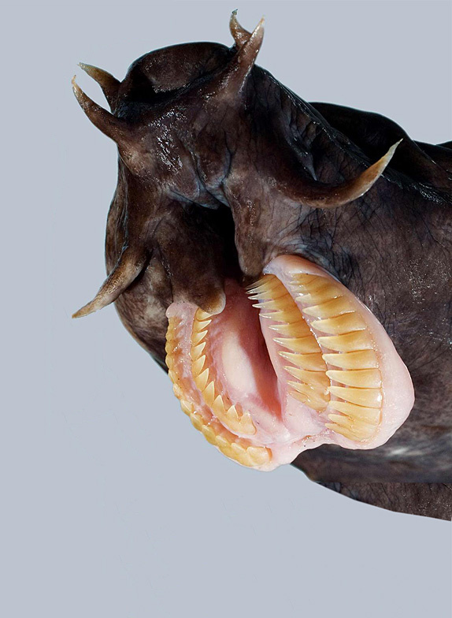
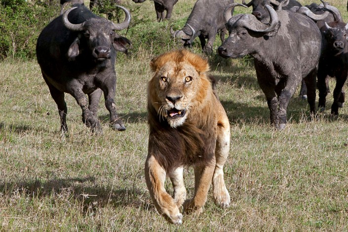
У хищников
(например, у твоего мирно дремлющего на
клавиатуре кота) глаза расположены спереди, чтобы вовремя увидеть добычу. А у травоядных глаза по бокам,
чтобы вовремя увидеть приближающегося хищника и успеть ужаснуться.
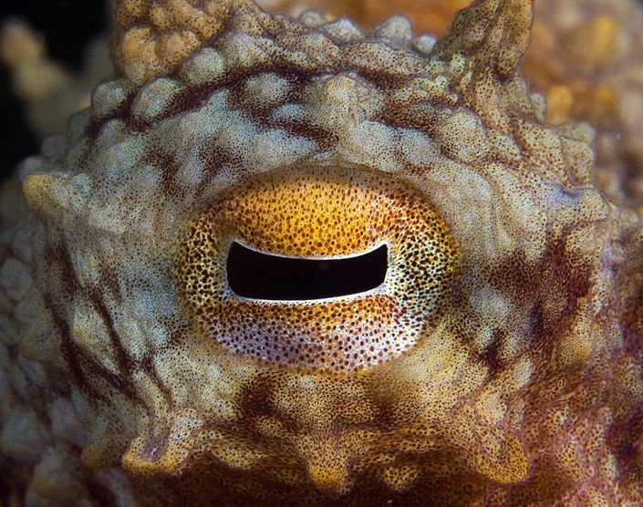
У осьминога прямоугольный зрачок, что дает обзор на все 340 градусов. У человека, кстати, всего 190 градусов.
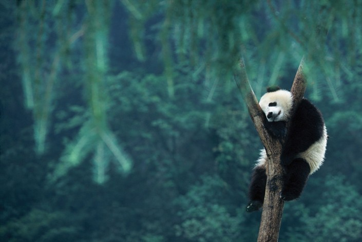
У панд нет специального места для сна - ни кровати, ни гнезда. Поэтому они засыпают там, где оказались в момент усталости. И если сон сморил их в тот момент, когда они залезли на дерево, ну что ж, так тому и быть.
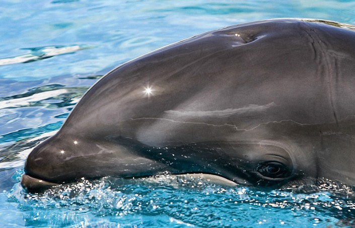
Дельфин не просто спит с одним открытым глазом - он спит с одним работающим "дежурным" полушарием мозга! Пока дельфин видит сны про то, как во время выступления в дельфинарии обнаружил, что на нем нет штанов, "дежурное" полушарие следит, чтобы дельфин вовремя сделал вдох и не захлебнулся.
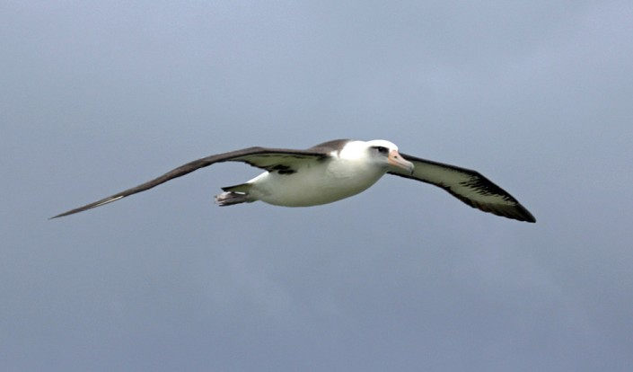
Альбатрос может спать прямо во время полета. Действует птица по тому же принципу, что и дельфин: в полете у альбатроса отдыхает одна половина мозга, а вторая следит, чтобы он удерживался в воздухе и не залетел в турбину самолета.
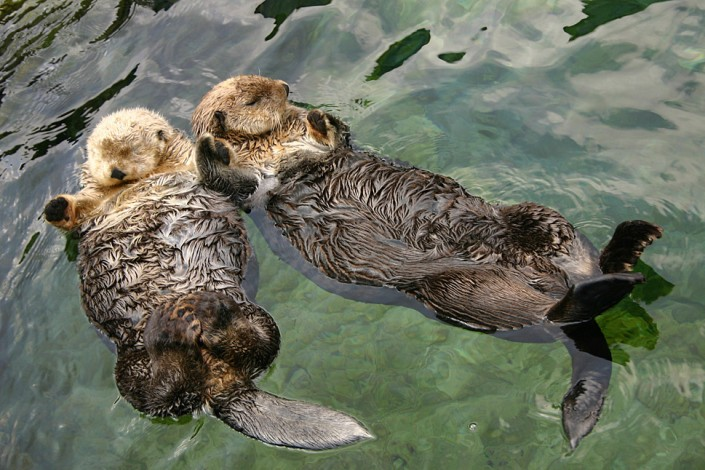
Каланы (морские выдры) держат друг друга за лапки, когда спят, чтобы их не отнесло неизвестно куда течением.
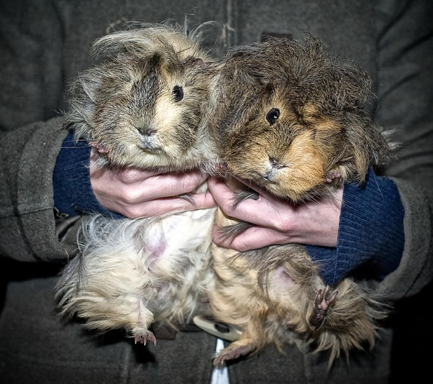
Швейцарский закон запрещает держать дома одну морскую свинку. Только пару, потому что свинка - животное социальное. А в случае смерти одной особи швейцарец должен срочно купить ей друга. Так швейцарцы и попадают в вечное рабство к морским свинкам.
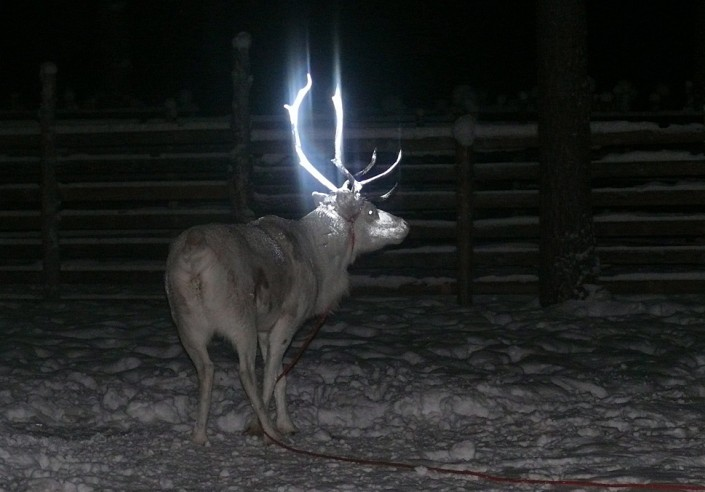
В Финляндии под колесами автомобилей ежегодно погибало до 4000 оленей. Это в прошлом. Находчивые лесники придумали опрыскивать рога оленей светоотражающей жидкостью.
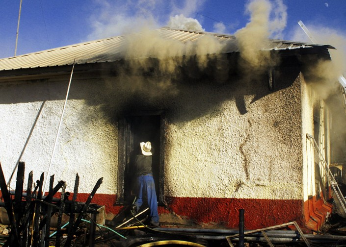
В штате Нью-Мексико мышь сожгла дом. Не то чтобы она сделала это по своей воле. Просто владелец дома бросил ее в печь, и мыши ничего не оставалось, как выскочить из огня и разнести пламя по всей хибаре. И поделом! Нечего обижать беззащитных.
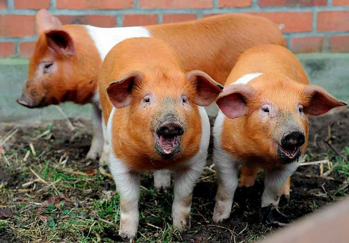
В начале XX века германские власти запретили датчанам Северной Фрисландии вывешивать датский флаг. "Ах так!" - воскликнули датчане (на немецком) и вывели породу свиней, подозрительно похожих на флаг. А чтобы подозрение превратилось в уверенность, назвали породу "датская протестная свинья".
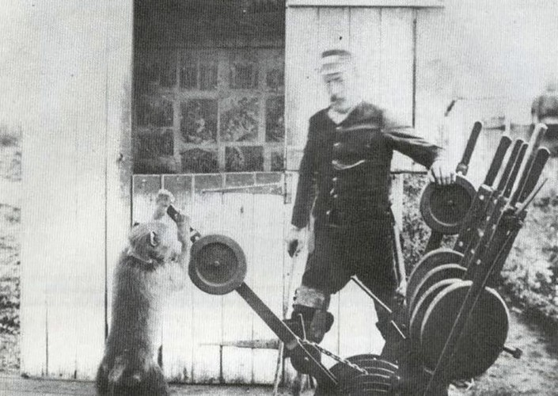
Когда несчастный случай отнял ноги у Джеймса Уайда, сигнальщика железнодорожных путей из южноафриканского города Эйтенхахе, он решил, что работу у него никто не отнимет. Джеймс, которому пришлось сесть в инвалидное кресло, завел медвежьего павиана Джека и обучил его по команде менять стрелки. Джек проработал под началом Джеймса девять лет, не совершив ни одной ошибки.
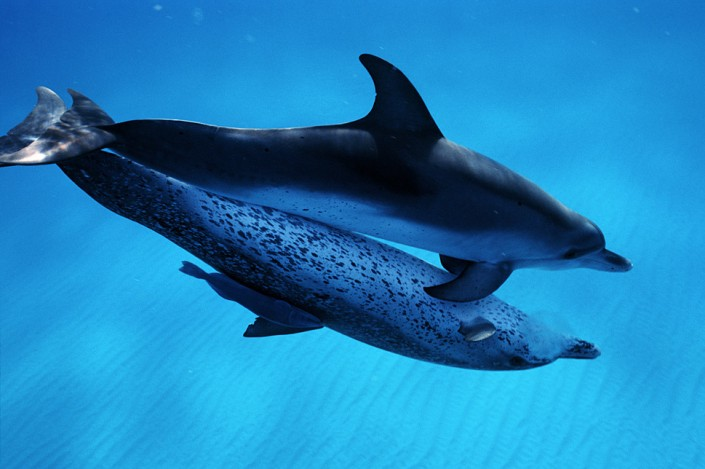
Из всего великолепия млекопитающих, представленных на Земле, лишь люди и дельфины занимаются сексом не только ради размножения, но и ради удовольствия. Рассказывает ли самка дельфина самцу о том, как у нее прошел день, ученые все еще не выяснили.
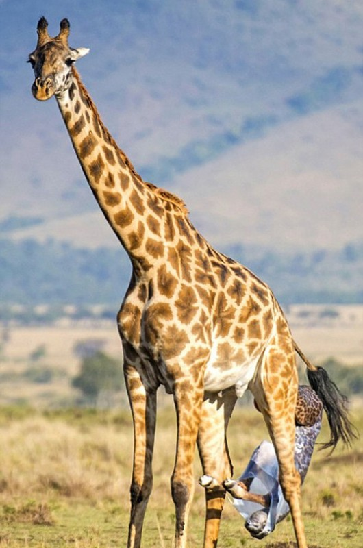
Детеныш жирафа уже в первые секунды после рождения понимает, что жизнь штука непростая. Родившись, жирафчонок тут же падает с двухметровой высоты, потому что жирафихи самоотверженно рожают стоя.
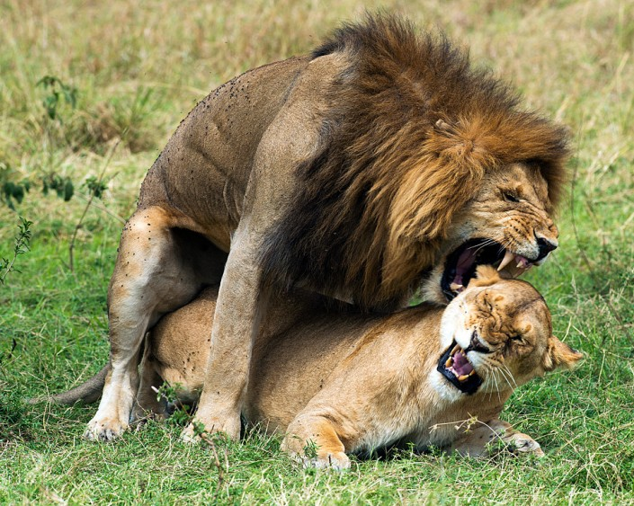
Во время брачного периода, который длится несколько дней, львы спариваются до 40 раз в сутки.
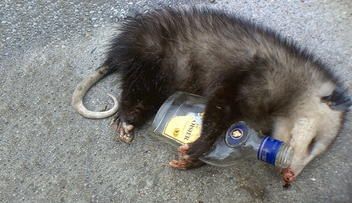
Станиславский никогда не крикнул бы "Не верю!" опоссуму, что притворился мертвым. Когда опоссум пугается, он ложится на бок, закрывает глаза, из носа у него течет кровь, и вообще он виртуозно играет мертвяка. А когда опасность, сфотографировав его с бутылкой, уходит, опоссум волшебным образом оживает. В английском даже есть выражение playing possum - "прикинуться никаким".